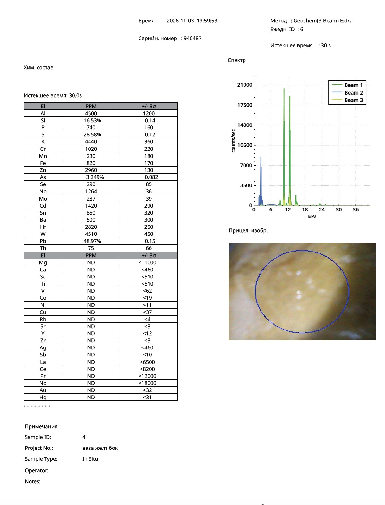
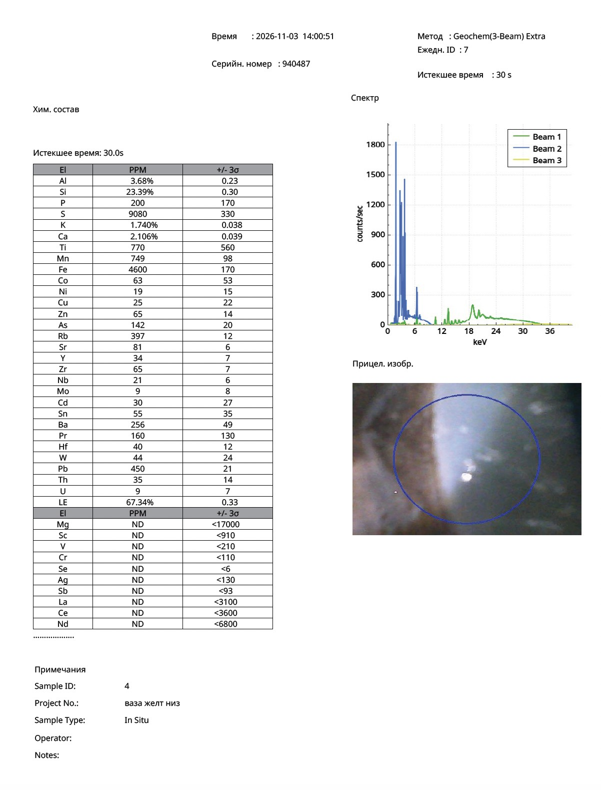

Research Article · Reference Object ro-ming-028
A Yellow Tianqiuping Bottle Vase with Anhua Decoration and a Chenghua Mark: XRF Analysis and Microscopy
Nona Dronova — Zenodo, 4 November 2026 — Ming Imperial Yellow · pXRF and Optical Microscopy
Abstract
A yellow porcelain vase of the tianqiuping (天球瓶) form, featuring concealed anhua incised decoration (dragon, phoenix, and clouds) and a six-character Chenghua mark (object CHENGHUA-YEL-001), was examined using portable X-ray fluorescence (pXRF) and optical microscopy. The yellow coating is a high-lead, low-temperature glaze (Pb: 48.97 wt.% according to the instrument readings), with no detectable antimony, zirconium, vanadium, titanium, cobalt, or copper. The base, which bears the cobalt mark, exhibits a geochemical profile tentatively consistent with Jingdezhen materials (Rb/Sr ≈ 5) and contains no identified modern technological markers. The readings for Cd, Sn, Zn, Se, As, S, and other elements are interpreted as known artefacts associated with a high-lead matrix.
Microscopy revealed a multilayer coating structure, including a stepped glaze edge, angular delamination of the upper layer along the crazing network, and bubbles in the underlying layer visible through the yellow coating. Ochre-brown darkening of the yellow glaze within the incised lines and pronounced iridescence were also observed. These features are consistent with published descriptions of early Ming imperial yellow glazes. Several questions remain unresolved: the low iron content measured at the surface (Fe: 820 ppm), the chromium reading (approximately 1,000 ppm), and the typological uniqueness of the vase form. The analytical and microscopic findings are consistent with the proposed Chenghua-period attribution but do not prove it. A programme of non-destructive verification is proposed.
Keywords: Ming dynasty; Chenghua period; imperial yellow; anhua; tianqiuping; lead glaze; multilayer structure; iridescence; portable X-ray fluorescence; spectral artefacts.
1. Introduction
Yellow monochrome porcelain of the Chenghua period (1465–1487) is documented by museum and archaeological evidence, although only a very small number of complete objects have survived.
- Museum corpus. No more than approximately twenty yellow monochrome dishes bearing Chenghua marks and attributed to the period are known; most are held in museums (Bonhams, 2020; Krahl, Sotheby's, 2017).
- Archaeological evidence. According to R. Krahl, Liu Xinyuan, director of the excavations at the imperial kilns in Jingdezhen, showed J. Thompson a box full of yellow sherds from a Chenghua-period archaeological layer and reportedly stated that there were many such boxes. Yellow coatings used in complex decorative programmes of the Chenghua period are illustrated in A Legacy of Chenghua (1993).
- The closest technological parallel. A pair of dishes decorated with incised anhua dragons, dated to the late Tianshun–early Chenghua period, features an egg-yolk-yellow glaze applied over a transparent crazed glaze (Bonhams, 2020).
- Archaeometric evidence. The colourant in Ming imperial yellow glaze is Fe₂O₃ dissolved in a lead-glass matrix, at concentrations of 1.81–4.87 wt.% (Hao et al., 2024). A transparent high-temperature layer, 150–450 μm thick and containing numerous bubbles, lies between the yellow glaze and the ceramic body (Hou et al., 2022). A slip layer has been described in Chenghua-, Hongzhi-, and Zhengde-period samples on the basis of TEM and EPMA analyses. Early Republican-period imitations also employed a slip layer, but their yellow colour was produced using antimony and tin (Zheng, Wu, Wu, 2008).
The aim of this study is to determine whether the chemical and microstructural characteristics of the vase are consistent with these criteria and to identify what further evidence is required to substantiate the proposed attribution.
2. Object
The object is a porcelain vase of the tianqiuping form, with a globular body and a tall cylindrical neck, covered with a yellow lead glaze. The anhua decoration, incised beneath the glaze, consists of a dragon, a phoenix, clouds, and a ruyi band around the neck. The base has an unglazed foot band and a white high-temperature glaze bearing a six-character Chenghua mark in underglaze cobalt blue.
The archival reference is CHENGHUA-YEL-001; within the measurement series, the object is designated “Vase 4”.
- Surface condition: dense crazing across the yellow surface, pronounced iridescence, and a concentration of the yellow colour to an ochre-brown tone within the incised lines.
- The object was previously described by the author on the basis of gemmological microscopy (Dronova, Zenodo 20785217). The present study adds elemental data for the first time.
3. Materials and Methods
Measurements were carried out in situ on 3 November 2026 using a portable XRF analyser (serial number 940487). Optical observations were made using macro- and microphotographs of the surface and glaze edge.
| Parameter | Value |
|---|---|
| Analytical mode | Geochem (3-Beam) Extra; 30 seconds per point |
| Point 1 (Daily ID 6, 13:59:53) | Yellow glaze on the broad body; Sample ID 4, “vase yellow side” |
| Point 2 (Daily ID 7, 14:00:51) | Unglazed band at the base, with part of the white high-temperature glaze and the edge of the cobalt mark included; Sample ID 4, “vase yellow bottom” |
Measurement No. 5 in the same report (“vase yellow”) belongs, according to its Sample ID, to a different object (Sample ID 3) and was excluded from the present analysis.
The reported values are elemental concentrations calculated by the instrument's built-in algorithm; uncertainties are given as ±3σ. The Geochem mode is based on a light-element matrix model and therefore provides semi-quantitative data when applied to high-lead glaze compositions. Spectra and readings from other glazes measured during the same session (12 objects, 19 measurement points) were used to assess possible spectral artefacts.
4. XRF Results
The yellow coating is a high-lead glass containing no detectable antimony or industrial pigment elements. The measurement at the base produced a composition tentatively consistent with Jingdezhen materials and showed no identified modern markers.
Table 1. Instrument readings (ppm unless otherwise indicated; ±3σ) and assessment of reliability
| Element | Yellow glaze (ID 6) | Base, mixed measurement point (ID 7) | Assessment |
|---|---|---|---|
| Pb | 48.97% ± 0.15 | 450 ± 21 | Genuine signal |
| Si | 16.53% | 23.39% | Genuine; absolute values are inaccurate |
| Al | 4,500 ± 1,200 | 3.68% | Genuine |
| K | 4,440 ± 360 | 1.740% | Genuine; underestimated in the yellow glaze (Section 6.4) |
| Ca | ND (<460) | 2.106% | — |
| Fe | 820 ± 170 | 4,600 ± 170 | Genuine; low value in yellow glaze remains unresolved (Section 8) |
| Mn | 230 ± 180 | 749 ± 98 | Genuine |
| Co | ND (<19) | 63 ± 53 | At the detection limit; measurement includes the edge of the mark |
| Rb / Sr | ND / ND | 397 / 81 | Genuine signals |
| Cr | 1,020 ± 220 | ND (<110) | Unresolved |
| Cu | ND (<37) | 25 ± 22 | No copper detected |
| Sb | ND (<10) | ND (<93) | Not detected |
| Zr | ND (<3) | 65 ± 7 | Not detected in the yellow glaze |
| Ti | ND (<510) | 770 ± 560 | Not detected / at the detection limit |
| V | ND (<62) | ND (<210) | Not detected |
| As | 3.249% | 142 ± 20 | Predominantly an artefact in the yellow glaze |
| S | 28.58% | 9,080 | Artefact in the yellow glaze |
| Cd | 1,420 ± 290 | 30 ± 27 | Artefact |
| Sn | 850 ± 320 | 55 ± 35 | Artefact |
| Zn / Se | 2,960 / 290 | 65 / ND | Probably artefacts |
| Nb / Mo / Hf / W | 1,264 / 287 / 2,820 / 4,510 | 21 / 9 / 40 / 44 | Artefacts |
At measurement point 2, the close-up photograph shows that the measurement field includes both the rough ceramic body and the glossy white glaze (LE 67%; poor contact). Consequently, the composition of the ceramic body itself cannot be determined from this measurement. The Pb reading of 450 ppm and As reading of 142 ppm at this point are most likely traces originating from the yellow glaze.
5. Spectral Artefacts Associated with the High-Lead Matrix
An uncritical reading of Table 1 — for example, interpreting Cd at 1,420 ppm, Se at 290 ppm, and Zn at 2,960 ppm as genuine concentrations — could lead to the false conclusion that the object contains modern cadmium yellow. Examination of the spectrum indicates that these readings are artefacts.
5.1. Pulse Pile-Up Peaks: Cd and Sn
At count rates of approximately 20,000 counts per second on the lead lines, the spectrum contains a triplet of sum peaks at approximately 21.1, 23.2, and 25.3 keV, with the middle peak being the most intense. These correspond to Pb Lα + Lα, Pb Lα + Lβ, and Pb Lβ + Lβ, respectively.
The second peak coincides with Cd Kα (23.2 keV), while the third coincides with Sn Kα (25.2 keV). Such peaks disappear when the X-ray tube current is reduced (Lee, 2016; WAAC, 2009).
In three different glazes measured during the same session and containing approximately 50% Pb, the apparent “cadmium” concentration is nearly identical (1,420–1,450 ppm). In contrast, cadmium was not detected in a glaze containing 7.4% Pb (below 19 ppm).
5.2. Sulphur and Arsenic
- Sulphur (S: 28.58%). The apparent sulphur signal results from overlap between the Pb M lines (2.35 keV) and S Kα (2.31 keV). A comparable case was reported for high-lead Corning C reference glass, where portable XRF incorrectly indicated approximately 30% SO₃ while underestimating light elements.
- Arsenic (As: 3.25%). This reading results from the overlap of Pb Lα (10.55 keV) and As Kα (10.54 keV) (Rowe et al., 2015). The As/Pb ratio is 0.066, matching the ratios in two other glazes containing approximately 50% Pb (0.065 and 0.066), which is characteristic of a lead-related artefact. The small peak at approximately 11.35 keV is Pb Lη, not As Kβ.
5.3. Other Lead-Related Signals
The readings for Zn, Se, Mo, Nb, Hf, and W are consistently reproduced in all glazes containing approximately 50% Pb and are explained by escape and sum peaks. A hafnium reading of 2,820 ppm in the presence of zirconium below 3 ppm is physically implausible for a genuine material composition.
A high-lead matrix distorts the pXRF determination of trace elements and requires dedicated calibration. This limitation is also documented in comparisons of pXRF and LA-ICP-MS analyses of lead-rich glass tesserae.
6. Optical Microscopy
Microscopy provides some of the strongest evidence in this study: the coating is multilayered, and its structure corresponds to features described in published studies of Ming imperial yellow glaze.
6.1. Stepped Glaze Edge
At the boundary with the unglazed foot band, the yellow coating forms several parallel, wavy “shorelines”, each set back from the preceding edge. This appearance is consistent with several successively applied layers, each terminating along its own boundary. Near the edge, the yellow area breaks up into polygonal cells of varying tone.
6.2. Angular Delamination Along the Crazing Network
The yellow surface displays dark olive-ochre areas with straight boundary segments and sharp angles. These appear as plates rather than diffuse clouds.
Such angular geometry is not characteristic of liquid-phase separation (which typically produces droplets or worm-like structures). It is more readily explained by mechanical delamination of the upper layer along the crazing network.
A similar mechanism is described by the Palace Museum (Gugong) for lead enamels applied over transparent glaze: differences in thermal expansion cause the upper layer to crack and locally detach, exposing the transparent glaze beneath. In the macro photographs, the crazing cells appear as slightly convex “pillows”, consistent with partial lifting of the plates.
6.3. Bubbles in the Underlying Layer
Numerous small, rounded bubbles with light-coloured rims are visible on both the light and dark plates. This indicates that the bubbles and the tonal boundaries occur at different depths.
The observation is consistent with the model proposed by Hou et al. (2022): a transparent lower layer containing numerous bubbles, covered by a transparent yellow layer without visible secondary phases, through which the bubbles remain visible.
6.4. Ochre-Brown Darkening in the Incisions and Iridescence
- Within the incised anhua lines, the yellow colour becomes concentrated and darkens to an ochre-brown tone. This behaviour is consistent with an iron-based colourant in lead glass. Chromium yellow tends towards orange when viewed through a greater thickness, whereas cadmium yellow generally remains bright yellow. This is a visual observation and requires spectrophotometric confirmation.
- The pronounced iridescence is interpreted as interference in a layered weathering film formed through the gradual leaching of lead and alkalis. It is consistent with the low K reading (0.44%) and undetected Ca in the surface layer, combined with the high Pb content. The natural origin of the iridescence requires microscopic confirmation (Section 9), since artificial iridescence is also known.
7. Comparison with Published Scientific Data
On the basis of eight lines of evidence, the vase is consistent with published data on early Ming imperial yellow glaze. None of the tested markers corresponds to later or industrial technologies.
Table 2. Evidence relevant to the proposed attribution
| No. | Feature observed on the vase | Published scientific reference | Strength of evidence |
|---|---|---|---|
| 1 | High-lead, low-temperature glaze (PbO ≈ 53% according to the instrument) | Ming imperial yellow is a high-lead, low-temperature glaze system (Hou et al., 2022) | Moderate: lead-based yellow glazes continued to be produced in later periods |
| 2 | Antimony not detected (<10 ppm) | Early Republican-period yellow glazes used Sb and Sn (Zheng, Wu, Wu, 2008); Qing-period imported yellow pigments included Pb–Sb compositions | High: excludes a key recipe used in later imitations |
| 3 | Zr <3, V <62, Ti <510 ppm | Twentieth-century industrial yellows were based on zircon and rutile | High |
| 4 | Multilayer coating with bubbles in the lower layer | A transparent bubble-rich layer, 150–450 μm thick, beneath the yellow glaze (Hou et al., 2022); slip reported in Chenghua–Zhengde samples (Zheng, Wu, Wu, 2008) | Moderate: the sequence of layers requires confirmation |
| 5 | Angular delamination of the upper layer along the crazing network | Delamination of a lead-containing layer over transparent glaze due to differences in thermal expansion (Palace Museum / Gugong) | Moderate |
| 6 | Ochre-brown darkening of the yellow glaze within the incisions | Iron is identified as the colourant in Ming yellow glaze (Hao et al., 2024) | Low to moderate: based on visual observation |
| 7 | Iridescence, convex crazing cells, and a leached surface | Long-term weathering of lead glazes | Moderate: artificial iridescence must be excluded |
| 8 | Base: Rb/Sr ≈ 5, no modern markers; elevated Mn near the cobalt mark | Jingdezhen raw materials; cobalt used in imperial kilns after Xuande associated with Mn/Fe >0.3 (Du Feng et al.) | Low: mixed measurement point; Co at the detection limit |
Additionally, the technique of applying yellow glaze over transparent glaze in combination with an incised anhua dragon is documented for the late Tianshun–early Chenghua period (Bonhams, 2020).
Evidence items 1–3 are based on instrumental measurements; items 4–7 are based on optical observations; item 8 is based on a mixed measurement point.
10. Conclusion
Taken together, the instrumental and optical data for the yellow tianqiuping vase CHENGHUA-YEL-001 are consistent with the technology of early Ming imperial yellow glaze. No reliable markers of modern or early Republican-period manufacture have been identified.
The relevant features include a high-lead glaze without detectable antimony, zirconium, vanadium, or titanium; a multilayer structure with a bubble-rich underlying layer; angular delamination of the upper layer along the crazing network; ochre-brown darkening within the incised decoration; iridescence and a leached surface; and a base composition tentatively consistent with Jingdezhen materials.
These observations provide several mutually relevant lines of evidence, none of which contradicts the proposed attribution. However, they do not establish a Chenghua-period date conclusively. The low iron reading, the chromium signal, the mixed nature of the base measurement, and the typological uniqueness of the tianqiuping form remain issues requiring further investigation.
Original pXRF Protocols
Portable XRF analyser, serial no. 940487 — 3 November 2026

Fig. 1. Measurement ID 6 — yellow glaze on the body. Click to open full size.

Fig. 2. Measurement ID 7 — foot band with white glaze and edge of the mark. Click to open full size.
References
-
Hao, M., Zhang, M., Weng, Y., & Xiong, Z. (2024). “Chromogenic mechanisms of overglaze yellow pigment produced in Jingdezhen imperial kilns during the Ming dynasty.” Heritage Science. https://doi.org/10.1186/s40494-024-01458-0
-
Hou, J. Y., Li, H., Kang, B. Q., Wood, N., Wang, G. Y., Jiang, J. X., Wang, Z. Y., & Zou, F. A. (2022). “The origins of imperial yellow glazed porcelain in the Ming Dynasty (1368 to 1644) China: Technical comparison to low-fired tile with yellow glaze.” Archaeometry, 64(1), 59–70. https://doi.org/10.1111/arcm.12692
-
Zheng, Nai-zhang, Wu, Jun-ming, & Wu, Juan. (2008). “Preliminary Studies of Jingdezhen's Low Temperature Yellow-Glaze from Ming and Qing Dynasty.” Journal of Building Materials. [Link to be added.]
-
“明初琉璃技术的传承与发展” [The Transmission and Development of Glazed Ceramic Technology in the Early Ming Period]. Discussion of the work by Hou et al. [Link to be added.]
-
Wood, N. et al. (2021). “An AAS study of Chinese imperial yellow porcelain bodies and their place in the history of Jingdezhen's porcelain development.” Advances in Archaeomaterials. [Link to be added.]
-
“故宫博物院藏康熙、雍正朝两件珐琅彩瓷无损分析” [Non-destructive Analysis of Two Enamelled Porcelain Objects from the Kangxi and Yongzheng Reigns in the Collection of the Palace Museum]. Palace Museum Journal. [Link to be added.]
-
Du, Feng, et al. “两种不同的进口钴料：‘苏麻离青’与‘苏渤泥青’” [Two Different Types of Imported Cobalt: “Sumaliqing” and “Subonijing”]. [Link to be added.]
-
Shen, J. Y., Henderson, J., Evans, J., Chenery, S., & Zhao, F. Y. (2019). “A study of the glazing techniques and provenances of Tang sancai glazes.” Archaeometry, 61, 358–373. [Link to be added.]
-
Krahl, R. (2017). “Chenghua Imperial Yellow.” Sotheby's, Yellow-Ground Wares from the Collection of Maureen Pilkington. [Link to be added.]
-
Bonhams. (2020). “A Very Rare Yellow-Glazed Anhua ‘Dragon’ Saucer-Dish, Late Tianshun/Early Chenghua.” [Link to be added.]
-
Christie's. “Chenghua Yellow Dish.” Lot essay. [Link to be added.]
-
Lee, L. (2016). “XRF in Cultural Heritage.” IIC-ITCC lecture. [Link to be added.]
-
WAAC Newsletter. (2009). Vol. 31(3). [Link to be added.]
-
Rowe, M. W., Cole, S. J., & Yousuf, M. (2015). “pXRF Analysis of Arsenic When Lead Is Present: A Cautionary Tale.” [Publication details and link to be added.]
-
“Comparison of pXRF and LA-ICP-MS Analysis of Lead-Rich Glass Mosaic Tesserae.” [Publication details and link to be added.]
-
Supplementary analytical appendix: “pXRF of Lead-Rich Glass (Corning C).” [Link to be added.]
-
Dronova, N. “Imperial Yellow Glaze of the Ming Dynasty: … a Chenghua-Period Tianqiu Bottle Vase with Anhua Incised Dragon and Phoenix Decoration.” Zenodo. DOI: 10.5281/zenodo.20785217. Previous study of the object. In that publication, the work by Zheng et al. was incorrectly dated to 2022; the correct year is 2008.
-
Portable XRF analytical report, “Chemical Composition,” analyser No. 940487, 3 November 2026, measurements Nos. 6 and 7 (Sample ID 4).
Suggested Citation
Dronova, N. (2026). A Yellow Tianqiuping Bottle Vase with Anhua Decoration and a Chenghua Mark: XRF Analysis and Microscopy. Zenodo. Published 4 November 2026.